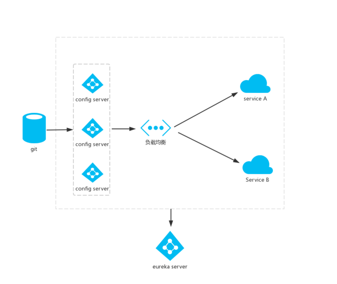
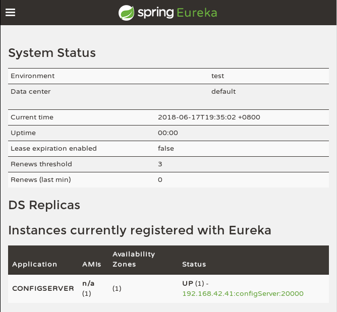
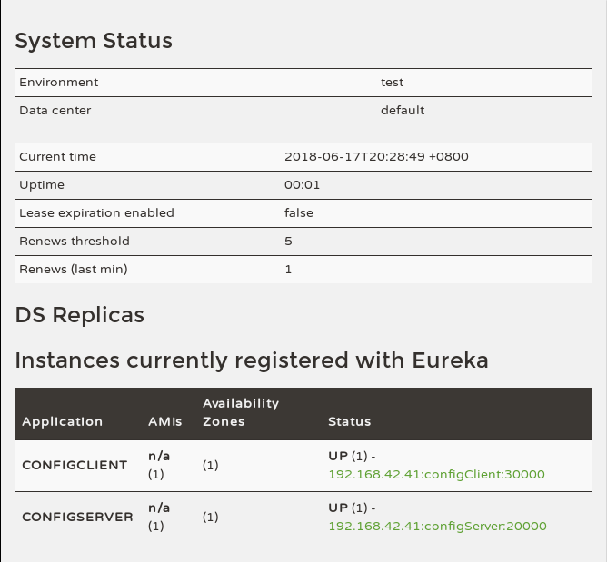

前记
上一章使用了配置中心服务器和客户端，使得配置可以统一。
当服务实例很多时，都要从配置中心读取文件，这时就可以考虑将配置中心做成一个微服务，将其集群化，从而达到高可用的目的。不需要我们为这些 Config 服务端做任何额外的配置，只需要遵守一个配置规则：将所有的 Config Server 都指向同一个 Git 仓库，这样所有的配置内容就通过统一的共享文件系统来维护，而 Config Client 客户端在指定 Config Server 位置时，只要配置 Config Server 外的均衡负载即可。

高可用 Config Server
添加依赖，使 Config Server 作为服务注册到 Eureka 注册中心：
1 | <dependency> |
配置文件 application.properties 中指定注册中心地址：
1 | eureka.client.service-url.defaultZone=http://localhost:7000/eureka/ |
加上 @EnableDiscoveryClient 注解：
1 |
|
启动服务后，可以看到已经注册上了：

Config Clien 客户端
同样，客户端也要添加依赖：
1 | <dependency> |
添加 @EnableDiscoveryClient 注解：
1 |
|
配置文件 bootstrap.properties，不仅要添加注册中心地址，还要启用发现配置服务中心和对应的服务名，而配置服务中心网址则不再需要了，由负载均衡动态分配：
1 | server.port=30000 |

测试：
1 | curl localhost:30000/from |
加密解密
配置文件会包括大量的敏感信息，比如：数据库的账户与密码等。很显然，如果我们直接将敏感信息以明文的方式存储于微服务应用的配置文件中是非常危险的。针对这个问题，Spring Cloud Config 提供了对属性进行加密解密的功能，以保护配置文件中的信息安全。比如：
1 | spring.datasource.username=root |
在 Spring Cloud Config 中通过在属性值前使用 {cipher} 前缀来标注该内容是一个加密值，当微服务客户端来加载配置时，配置中心会自动的为带有 {cipher} 前缀的值进行解密。
使用前提
在使用 Spring Cloud Config 的加密解密功能时，有一个必要的前提：配置中心的运行环境中安装的 JCE（Unlimited Strength Java Cryptography Extension） 必须是不限长度的。虽然 JRE 中自带 JCE，但是默认使用的是有长度限制的。可以从 Oracle 官网中下载到：
JDK6：http://www.oracle.com/technetwork/java/javase/downloads/jce-6-download-429243.html
JDK7：http://www.oracle.com/technetwork/java/javase/downloads/jce-7-download-432124.html
需要将 local_policy.jar 和 US_export_policy.jar 两个文件复制到 $JAVA_HOME/jre/lib/security 目录下，覆盖原有内容。
注意
从 1.8.0_151 版本和 1.8.0_152 版本开始，Java 已经提供了更简单的方法来启用不受限的加密算法强度。
在你的 $JAVA_HOME/jre/lib/security 目录下有个 java.security 文件，比如：
1 | /jdk1.8.0_152 |
里面有关于使用哪种加密算法强度的配置以及说明（可能被#注释了）：
1 | crypto.policy=unlimited |
开启之后，重启你的 Java 应用即可使用不受限制的加密强度。
$JAVA_HOME/jre/lib/security/policy/ 目录下有 limited 和 unlimited 目录，它们分别存放了相应的 local_policy.jar 和 US_export_policy.jar 文件。
可以通过下面的代码验证是否可以使用弱强度的加密：
1 | public static void securityVerify() throws Exception { |
配置密钥
完成了上面的 JCE 安装后，就可以启动 Config Server 配置中心了。
在控制台中，会输出一些配置中心特有的端点：
- /encrypt/status：查看加密功能状态的端点
- /key：查看密钥的端点
- /encrypt：对请求的body内容进行加密的端点
- /decrypt：对请求的body内容进行解密的端点
Get 请求 /encrypt/status 查看一下加密功能状态：
1 | curl http://localhost:20000/encrypt/status |
对称加密
因为没有配置密钥，所以无法使用加密功能。在配置文件 bootstrap.properties 中直接指定密钥信息（对称性密钥）：
1 | encrypt.key=abc123 |
特别注意是
bootstrap.properties配置文件，不是application.properties，不然无法加载密钥信息。
重启 Config Server，再次访问 /encrypt/status：
1 | curl http://localhost:20000/encrypt/status |
此时，配置中心的加密解密功能就已经可以使用了。
可以尝试下 /encrypt 和 /decrypt 端点来进行加密和解密的功能。（都是POST请求）
测试：
1 | $ curl http://localhost:20000/encrypt -d abc123 |
然后给 Config Client 的所有配置文件 configClient-xx.properties 里都加上一个加密过的密码（加密前的密码是 root）：
1 | password={cipher}d2538dde1147b51a3b1973e06af1abf0efc4bc40bdb6b27cdcf3307524b14bac |
然后将配置 push 到 Git 上。
给 Config Client 添加一个控制器：
1 |
|
测试：
1 | $ curl http://localhost:30000/password |
可以看出 Config Server 会自动解密 {cipher} 开头的密文。
有时候我们可能想 Config Server 直接返回密文，而不是解密后的内容，可以在 application.properties 配置中加上：
1 | spring.cloud.config.server.encrypt.enabled=false |
非对称加密
上面使用的是对称加密，还可以使用非对称加密，用 JDK 自带的 keytool 生成 RSA 密钥对（有效期设为365天）：
1 | keytool -genkeypair -alias configServer -keyalg RSA \ |
将生成的 configServer.jks 复制到 configServer/src/main/resources 目录下，然后在 bootstrap.properties 中配置：
1 | #encrypt.key=abc123 |
测试：
1 | $ curl http://localhost:20000/encrypt -d abc123 |
可以看出非对称加密也设置成功了。
动态更新配置
虽然有了配置中心，但是每次更新了配置后需要重新启动客户端，如果有一堆客户端需要重启呢？可以通过实时更新通知来让它们知道需要更新了，而不是一个个重启它们。这里将使用 Spring Cloud Bus，它可以将分布式的节点用轻量的消息代理连接起来。可以用于广播配置文件的更改或者服务之间的通讯，也可以用于监控。这里主要是用它来实现通知微服务架构的配置文件的更改。
当 Git 文件更改的时候，管理员通过向其中一个端口为 8882 的 Config Client 发送请求 /bus/refresh／，8882 端口客户端收到请求后会向消息总线发送一个更新消息，并且由总线传递到其他服务，从而使整个微服务集群都达到更新配置文件的目的。
在 Config Client 中添加依赖：
1 | <dependency> |
消息总线需要用到 RabbitMQ，Arch 可以参考 ArchWiki，其他系统自行搜索安装。
在配置文件 application.properties 中加上 RabbitMQ 的配置，包括 RabbitMQ 的地址、端口，用户名、密码，代码如下：
1 | spring.rabbitmq.host=localhost |
在更改了配置并上传后，只需要发送 POST 请求到其中一个 Config Client 客户端，比如：http://localhost:30000/bus/refresh，就可以发现所有其他 Config Client 都会重新读取配置文件。


{kind=link}